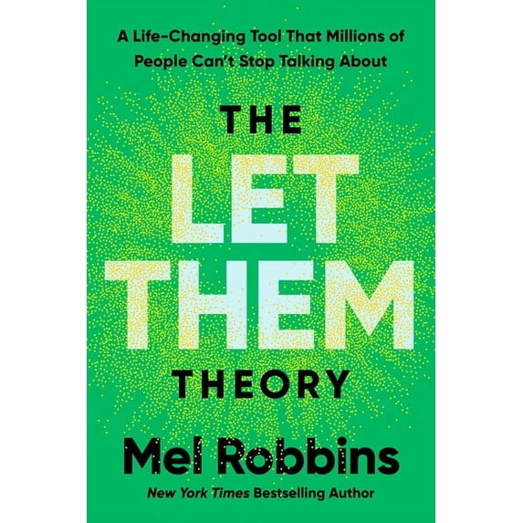

Library › Self-Improvement
The Let Them Theory — Summary & Key Lessons

Two words that free you from other people's opinions, moods, and drama — and two more that hand you back your power.
📖 OPEN THE FULL INTERACTIVE BREAKDOWN →🌐 Read it in Hindi, Hinglish, Gujarati, Tamil & 22 more languages — free, with audio.
💡 The Big Idea
You waste enormous energy trying to control things you never could: other people's opinions, moods, choices, and behavior. Robbins' tool has two halves. 'Let Them': when people don't invite you, judge you, underestimate you, or act badly — let them; their behavior is information, not your assignment. 'Let Me': the second, crucial half — let ME decide how I respond, what I tolerate, where I invest my energy. Adult relationships, ambition, friendship, and peace all get simpler when you stop managing other people and start managing yourself.
🧠 The 7 Key Lessons
Lesson 1: Stop Managing Other People's Behavior
Part 1: The Let Them Theory
Most stress isn't caused by what people do — it's caused by your attempts to control what they do: correcting their opinions, fixing their moods, choreographing how they see you. Robbins' insight is that control over others was always an illusion; the only real jurisdiction you have is yourself. Saying 'Let Them' out loud when someone disappoints you creates an instant gap between their behavior and your reaction — and in that gap, your power comes back. It's not passive surrender; it's a radical redeployment of energy toward the only life you actually run: yours.
📖 Example: Robbins' origin story: at her son's prom, she was frantically micromanaging — the dinner reservations were wrong, it was raining on the photos, the kids wanted to eat tacos instead. Her daughter finally snapped: 'Mom, if they want to eat tacos in the rain —… Read the full example →
⚡ Do this: Next time someone does something that irritates you, say the literal words 'Let them' (out loud or in your head), then ask: 'Now what do I want to do?' Practice ten times this week.
Lesson 2: Let Me: The Half Everyone Skips
Part 1: The Power of Let Me
'Let Them' without 'Let Me' becomes doormat philosophy. The second step is where your agency lives: let them cancel — and let ME decide if I keep initiating with this person. Let them gossip — and let ME choose what I share with them. Every 'Let Them' must be paired with a decision about YOUR next move: what you'll accept, how you'll respond, whether you'll stay. You are not responsible for other people's actions, but you are one hundred percent responsible for your response to them — that's not a burden, it's the whole game.
📖 Example: A reader story Robbins tells: a woman's boyfriend wouldn't commit after years. 'Let him' — she stopped begging, lecturing, scheming. Then 'Let me' — she got clear that SHE wanted marriage, told him once, gave it a deadline in her own head, and when nothing… Read the full example →
⚡ Do this: Take one relationship frustration. Write two lines: 'Let them ___' and 'Let me ___.' If your 'Let me' line is blank, that's the actual problem — fill it in.
Lesson 3: Other People's Opinions Are None of Your Business
Part 2: Managing Judgment
Fear of being judged quietly runs most lives: what you wear, post, attempt, and say out loud. Here's the liberating math — people think about you far less than you imagine (they're busy starring in their own movie), and the ones who do judge you are revealing their own values, not measuring yours. You can't stop people from forming opinions; brains judge automatically. What you can do is refuse the second job of managing those opinions. Every dream that dies in a drawer was killed by an audience that wasn't even watching.
📖 Example: Robbins points to the gym truth every beginner learns: nobody at the gym is staring at you — they're staring at themselves in the mirror. The judgment you feel walking in is self-generated. The same applies to the business you won't start and the post you… Read the full example →
⚡ Do this: Do one thing this week you've postponed out of judgment-fear (post it, wear it, pitch it, sign up). Before doing it, say: 'Let them think whatever they want.'
Lesson 4: Adult Friendship: The Great Scattering
Part 3: Friendship
Adult friendships fade not from betrayal but from logistics: proximity, timing, and shared life-stages did the heavy lifting in school, and adulthood removes all three. Stop grieving friendships as if someone did something wrong — let people drift when their lives drift, without a story of betrayal. Then apply 'Let Me': adult friendship runs on deliberate effort, so become the one who initiates. The awkward truth: everyone is waiting for someone else to text first. The person who accepts this becomes rich in friends while everyone else waits by the phone.
📖 Example: Robbins reframes a universal sting — seeing friends hang out without you on Instagram. Old response: spiral, feel rejected, withdraw. Let Them response: let them have dinner without you; three people don't owe you an invite. Let Me response: text the one you… Read the full example →
⚡ Do this: Be the initiator: this week, text three people you've 'lost touch with' and propose a specific plan (day, time, place). Zero hints, zero waiting your turn.
Lesson 5: Comparison and Envy Are Compasses
Part 4: Comparison & Competition
Comparing yourself to others is automatic — the brain is a ranking machine — so stop trying to suppress it and start using the data. Envy is unexpressed ambition: the sting you feel at someone's promotion, physique, or freedom points at what YOU want. Let them be successful (torching their success in your head changes nothing about your life); then let me convert the envy into a to-do list. The person you're jealous of is not your rival — they're your proof of concept: living evidence the thing you want is possible.
📖 Example: Robbins' reframe in action: a woman seething at a former colleague's startup success realized the envy wasn't about the colleague at all — she'd shelved her own business idea years ago. The colleague hadn't stolen anything; she was a mirror. The woman… Read the full example →
⚡ Do this: Name the person you envy most. Write exactly what part of their life stings — that's your goal in disguise. Take one concrete step toward it within 48 hours.
Lesson 6: You Can't Save People Who Won't Save Themselves
Part 5: Helping Struggling Adults
The hardest 'Let Them' is watching someone you love make choices you'd never make — the brother who won't job-hunt, the friend in the bad relationship, the parent who won't see a doctor. Pushing, lecturing, and rescuing don't work: pressure triggers resistance, and rescuing removes the consequences that motivate change. Adults change when THEY decide to, usually when the pain of staying the same exceeds the pain of changing. Your actual powers: model the behavior, keep the door open, love them without funding the dysfunction — and live your own life fully in the meantime.
📖 Example: Robbins on watching an adult child flounder: every rescue (paying the bills, making the calls, smoothing the consequences) delayed the exact discomfort that eventually produced change. When the parents finally 'let him' hit the wall — while keeping dinner… Read the full example →
⚡ Do this: Identify who you're currently trying to fix. Replace one act of rescue/lecture this week with one act of modeling or simple presence. Repeat until it's a habit.
Lesson 7: Let Them Underestimate You
Part 6: Ambition & Proving People Wrong
When you announce a big goal, most people respond with doubt, lukewarm support, or subtle discouragement — not because they're enemies, but because your change threatens their map of the world (and of you). Let them doubt. Needing everyone's belief before you begin is just another form of control-seeking. The energy spent recruiting believers is stolen from the work itself; results are the only argument that ever convinced anyone. Success built quietly needs no permission slip — and the doubters make excellent audience members later.
📖 Example: Robbins' own arc embodies it: mocked for the simplicity of her '5 Second Rule,' dismissed as a motivational lightweight — she let them, kept publishing, and built one of the biggest personal-development platforms in the world. The critics didn't get a vote;… Read the full example →
⚡ Do this: Stop pitching your dream to doubters for approval. Pick the one goal you keep debating with people, go silent about it for 90 days, and let the work talk.
✅ 5-Step Action Plan
- Say 'Let them' out loud 10 times this week — then always add 'Let me...'
- Do one judgment-proof action you've been postponing.
- Text three drifted friends with specific plans — be the initiator.
- Convert your sharpest envy into a written goal + first step in 48 hours.
- Swap one rescue attempt for modeling; go silent on your big goal for 90 days.
💬 Best Quotes from The Let Them Theory
- “The fastest way to take control of your life is to stop controlling everyone else.”
- “Let them. Then let me.”
- “Adult friendship isn't about proximity. It's about effort.”
Interactive version: mark lessons as read, listen in your language, share quote cards.